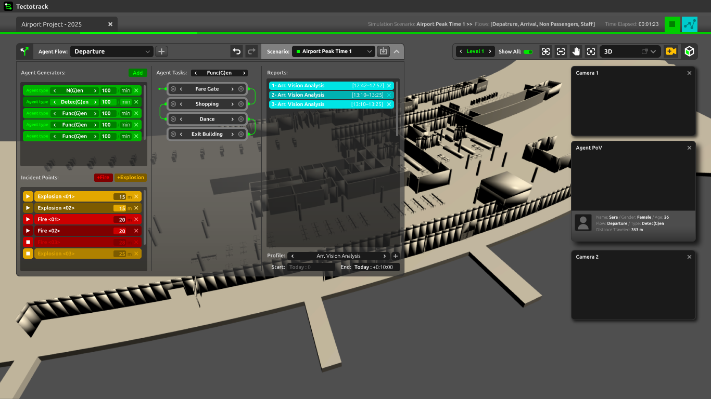
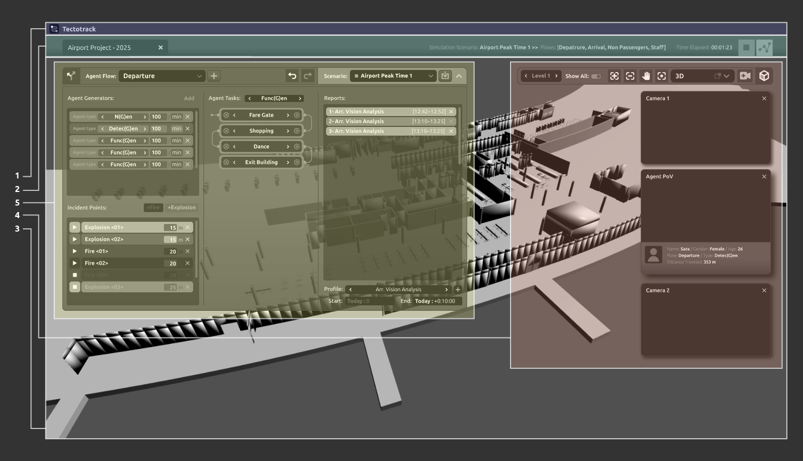
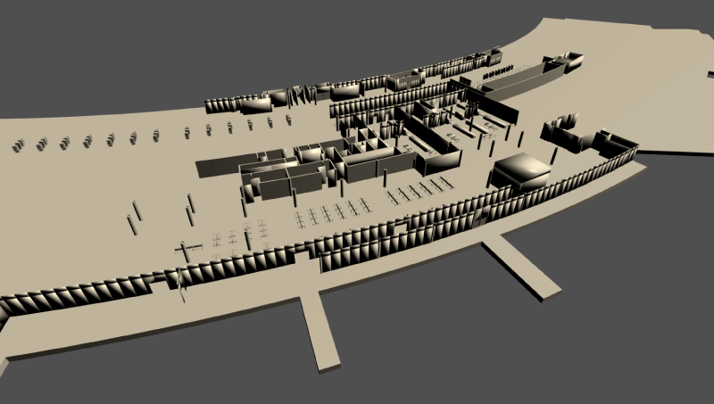
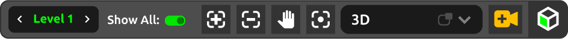
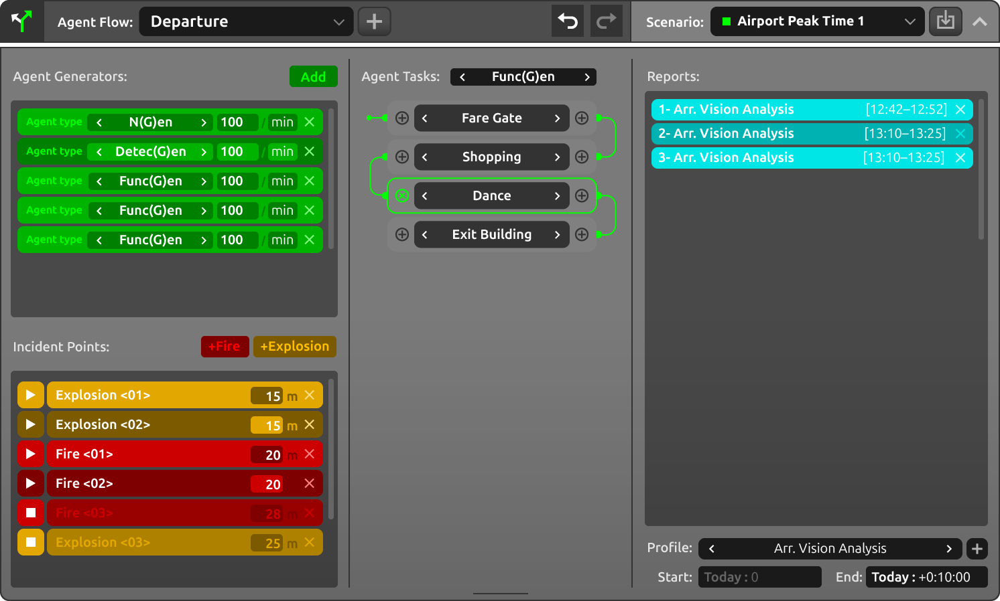
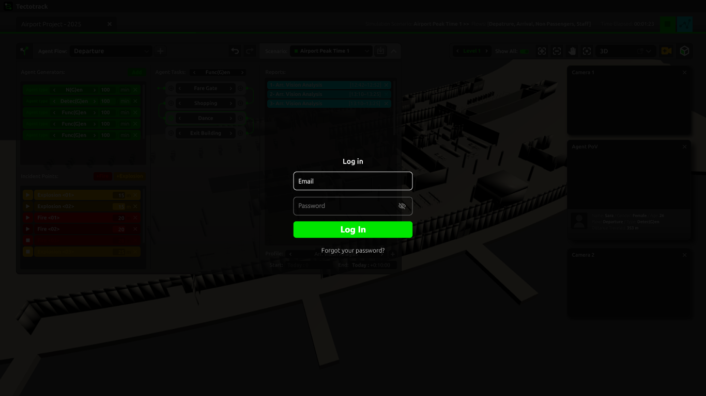
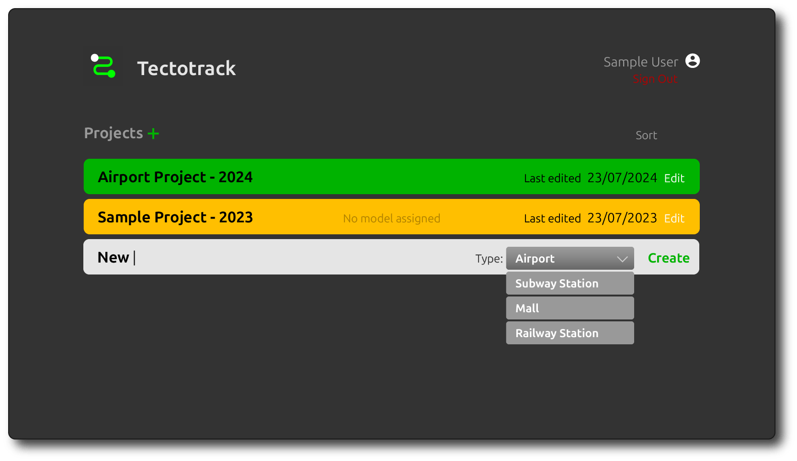

TectoTrack is the first social digital twin — a simulation technology that captures not just the movement of people in space, but the way they see, interpret, and react to their environment. It models human behavior in complex settings such as airports, shopping malls, transportation hubs, and public institutions, offering insights grounded in perception and decision-making.
At the core of TectoTrack is a vision-based agent system, enabling each agent to navigate based on what is visible within their field of view. This unique approach goes beyond traditional pathfinding logic by replicating how humans rely on signage, visibility, and spatial cues to make decisions in real time.
TectoTrack supports a range of agent types, allowing for different levels of behavioral complexity:
Func(G)en agents operate with predefined tasks and logical sequences, simulating routine behavior.
Detec(G)en agents explore unfamiliar environments through vision and memory, gradually building local awareness.
N(G)en agents simulate advanced, human-like reasoning by evaluating their situation and generating decisions through AI-based prompts.
This layered agent architecture allows TectoTrack to simulate both structured and emergent behaviors, providing a powerful tool for designing, evaluating, and optimizing real-world environments with human experience at the center.
Who is Tectotrack for?
TectoTrack is built for professionals who design, manage, or advise on spaces where human experience matters. From architects and planners to consultants and researchers, TectoTrack empowers teams to understand how people truly interact with their environment — both in future designs and in evaluating existing spaces.
It’s for:
Designers & Planners — to test and optimize layouts, flows, and spatial logic.
Facility Managers — to improve navigation, safety, and operational efficiency.
Wayfinding & UX Experts — to design with visibility and user perception in mind.
Consultants — to support data-driven decisions for complex environments.
Researchers — to study spatial cognition, perception, and behavior.
Policy & Safety Teams — to simulate crowd dynamics and emergency scenarios.
Key Benefits
Real-Time 24/7 Simulation: Continuously simulate how people move and behave in spaces, at any time of day or operational scenario — from daily activity to high-stress moments.
Seamless Revit Integration: Directly imports and processes Revit models, streamlining your workflow and enabling fast, accurate simulation on real architectural data.
Advanced Reporting and Analytics: Generate customizable reports with visual outputs such as heatmaps, visibility fields, and video recordings to support in-depth spatial analysis and clear stakeholder communication.
Inclusivity: Test and design environments for all users — including those with mobility, visual impairments, or other differences — to ensure equitable access and usability.
Advertising Visibility: Evaluate placement and visibility of advertisements and digital media based on where real attention is likely to fall.
Signage and Wayfinding: Assess the effectiveness of directional systems by tracking how agents interpret and follow visual guidance in complex settings.
Licensing
1. Plans
2. License Agreement
3. Terms of Service
Installing Tectotrack
System Requirements
Operating System: Windows 10/11 (64-bit)
Processor: Intel i7 or AMD equivalent
RAM: 16GB (32GB recommended)
Graphics Card: NVIDIA RTX 3060 or higher
Internet Connection: Required for cloud-based features
Run the setup file and follow on-screen instructions.
Launch Tectotrack and sign in with your subscription credentials.
User Interface
Layout System
After starting Tectotrack, signing in, and setting up a new project or opening a previous one, the Tectotrack window should look similar to the image below.

The default Tectotrack interface.
Tectotrack’s interface consists of five main parts:

Tectotrack’s default Screen Layout.
Title Bar: Displays software icon and name.
Title Bar
Action Bar: Includes current project tab, simulation status, and key action buttons.
Action Bar
Viewport: Displays the 3D environment and simulation.

Viewport
Navigation Widget: Tools for zoom, pan, camera management, and level isolation.

Navigation Widget
Agent Flow Panel: Controls for defining and managing agent behavior.

Agent Flow Panel
Authentication
Upon launching the application for the first time, a sign-in page will appear, prompting you to enter your credentials.

Sign In
Projects Panel
This is where you can manage your projects

User projects panel
Setup New Project
Importing an Environment
Create a new project in the Projects Panel.
Select the project to open it.
Upload a Revit (.rvt) file from your local machine.
Tectotrack processes the file in three steps:
Upload
Extract Metadata
Rebuild Mesh
Once complete, the 3D environment is displayed in the viewport, ready for navigation.
Defining and Running a Simulation
Agent Flow Setup
Creating/Selecting an Agent Flow: Use the dropdown list to add or choose an agent flow.
Setting Agent Generators:
Place generator points in the environment.
Define agent types: Detec(g)en, Func(G)en, or N(G)en.
Adjust spawn rate (agents per minute).
Adding Emergency Scenarios:
Introduce fire or explosions for evacuation testing.
Defining Agent Tasks:
Use the interactive flowchart to define movement logic based on metadata.
Saving Scenarios: Organize different agent flows into scenarios for comparison.
Running a Simulation
The Run/Stop Simulation Button activates once a scenario is fully set up.
Start the simulation and observe:
Real-time agent movement
Click on agents to view their persona/type
Enable PoV Mode to see from an agent's perspective
Reporting & Analysis
Generating Reports
Select an existing report profile or create a new one.